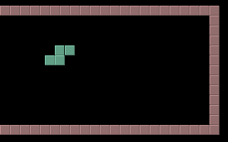

名稱：橫版俄羅斯方塊／橫向俄羅斯方塊 (SideTris，英文版) 簡介：PC Solutions 1994年出品的俄羅斯方塊，採共享軟體方式銷售。遊戲主要將原本直版 的掉落方式改成橫版 [待補]。  保護：無 操作： 上下鍵 = 移動 Space = 旋轉 右鍵 = 加速落下 Enter = 暫停 Esc = 結束遊戲 +/- = 設定方塊大小 (主畫面時) F1 = 遊戲難度切換 (主畫面時) F2 = 重設按鍵定義 (主畫面時)
